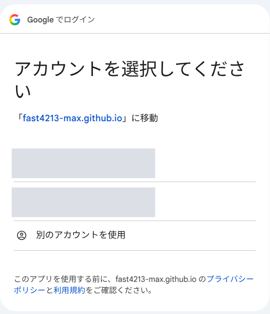
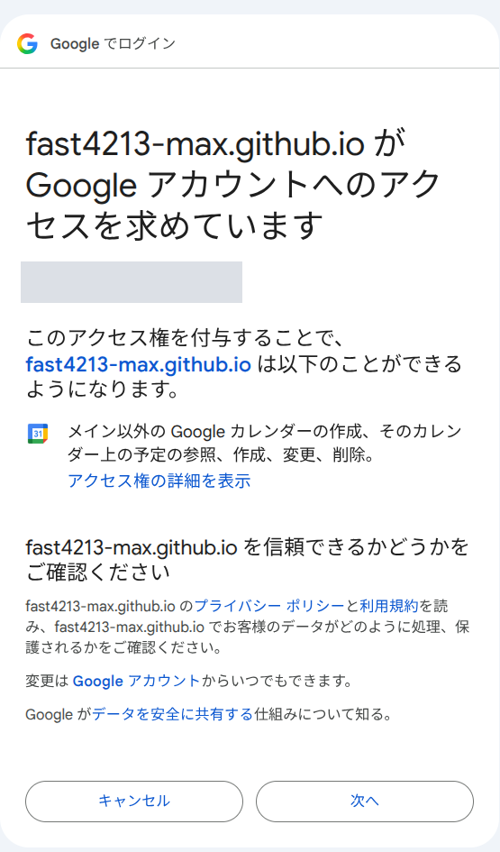
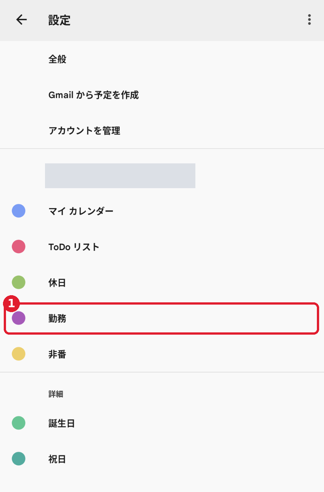
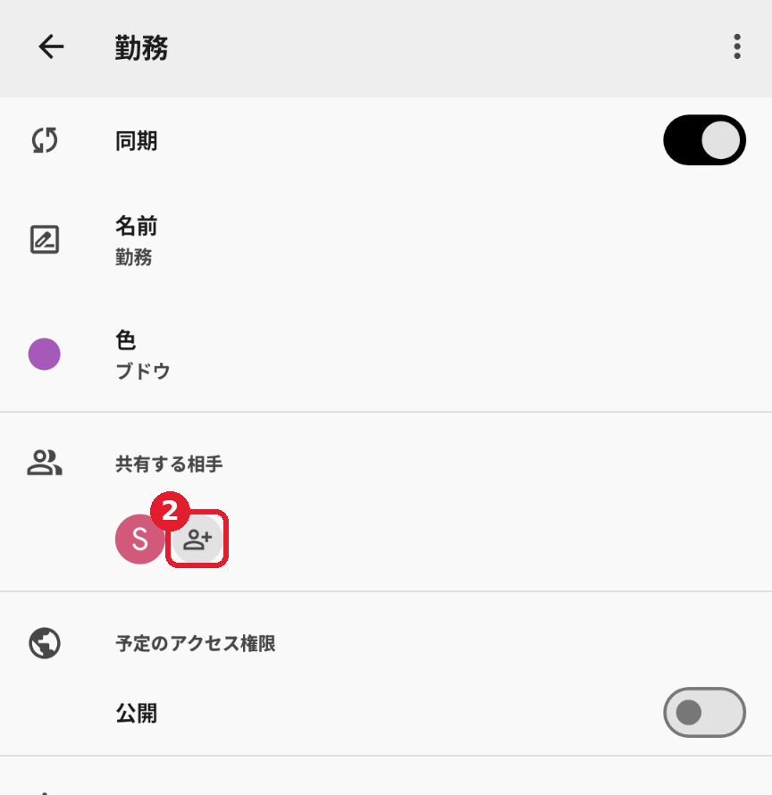
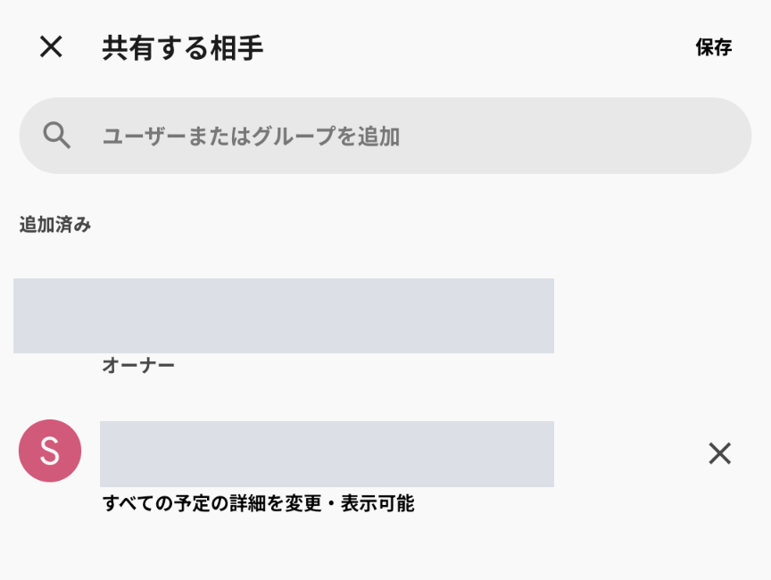
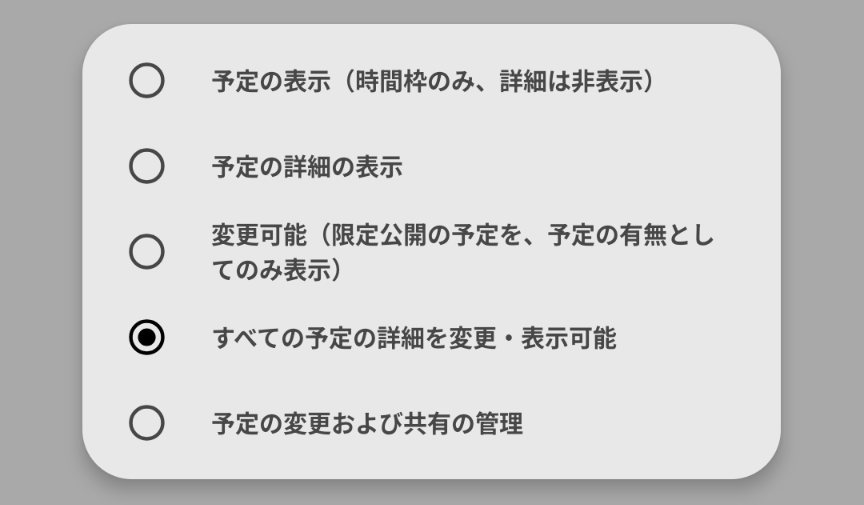

勤務登録
使い方(利用者向け)
https://fast4213-max.github.io/shiftflow/
勤務の番号を入れて「登録」を押すと、
はじめに: 全体の流れ
スマホだけで最後まで設定できます(パソコンはいりません) Googleカレンダーのアプリ (Android・iPhone 共通。入れていない人は、先に入れます。共有に使います)スマホのカレンダーアプリで勤務を見る人は、「6. 勤務を入力して、登録する」のあとに、「7. スマホのカレンダーで見る設定」も確認します。
最初の1回だけ設定をします(10〜15分ほど)。あとは勤務を入力して「登録」を押すだけです。
アプリで「登録」 → Googleカレンダーに予定が入る → 好きなカレンダーアプリで見る (同期をオンにします)
1 新規登録する社員番号・名前・PIN・共通パスワード(管理者から聞く)
2 設定画面の「かんたん設定」で、勤務用のカレンダーを作る名前を決めてボタンを押すだけです
3 作ったカレンダーを、アプリの登録用アドレスと共有する作った数だけ(1〜3つ)。Googleカレンダーのアプリでできます
4 アプリの設定画面で、区所を選ぶIDは自動で入ります(手で作った人は手順4)。「保存して接続テスト」で完了
5 勤務入力の画面で、番号を選んで「登録」これを毎月くり返します
登録される予定
種類 入るカレンダー タイトル メモ 泊 勤務用 番号 出勤時間(2行目に泊地) 日勤 勤務用 番号 出勤〜退勤 非番(泊の翌日) 勤務用 〜 退勤時間 出勤・非番を2件で登録(選んだ人) 勤務用(非番の時間は非番の時間用にもできる) 番号や〜と、時間の予定の2つ 今まで通り 休日(公休・年休など) 休日用(なければ登録しない) 特休・公休・年休など なし
予定は終日です(「出勤を2件で登録」「非番を2件で登録」の時間の予定だけは、時間つきです)。土日・祝日・年末年始(12/30〜1/3)は自動で「休」(休日の時刻)になります。
1. 新規登録とログイン
新規登録(最初の1回)
最初の画面の「新規登録 」を押す(右の画面の 4 )
次の画面で入力して「登録する 」(6 )を押す
入れるもの 1 社員番号(7桁) 2 名字と名前 3 4 PIN(4桁の数字)を2回。忘れないように 5 共通パスワード(管理者から聞く。登録のときだけ使う)
登録できたら、そのまま設定画面に進みます。
ログイン(次回から)
最初の画面の「利用者」で、1 社員番号と 2 PIN を入れ、3 「ログイン」を押します。
PINを5回続けて間違えると、その社員番号は15分ほど使えなくなります(時間をおけば戻ります)。
PINを忘れたとき
ログインの画面 新規登録の画面
2. かんたん設定で、勤務用のカレンダーを作る
このアプリ専用のカレンダーを、新しく作ります。自分のメインのカレンダーは使えません。手で入れている予定とも分けられるので、安心です。
アプリの「設定 」画面を開く
「1. 区所を選ぶ 」の下の「かんたん設定 」で、勤務用のカレンダーの名前を決める(そのままの「勤務」でもかまいません)
休日の予定は、「休日用のカレンダーを別に作る」「勤務用のカレンダーに、いっしょに入れる」「休日の予定は登録しない」から選ぶ
「非番を2件で登録する」を使い、色を変えたい人は、「非番の時間用のカレンダーも作る」にチェックを入れる(使わなければ、チェックなし)
「Googleでカレンダーを作る 」(1 )を押し、Googleの画面で許可する
作れると、下の「3.」の欄に、カレンダーIDが自動で入り、そのまま保存されます(「非番の時間用」を作ったときは、「非番を2件で登録する」もオンになります)。次の手順3で、作ったカレンダーを共有します(スマホは、Googleカレンダーのアプリから行います。ボタンの下の「共有を開く 」(2 )のリンクは、スマホではブラウザが開くことがあります)。共有できたら、設定画面に戻り、区所を選んで「保存して接続テスト」を押します
許可は、アプリが作ったカレンダーだけ です(メインのカレンダーや予定は、見られません)。許可はこの画面の中だけで使い、保存しません。Googleの画面には、アプリの名前の代わりに「fast4213-max.github.io」と出ます(下の図)。アカウントを選び、「メイン以外の Google カレンダーの作成…」と出たら、「次へ」を押します。
かんたん設定(作ったあと)
勤務用のIDがもう入っている人には「勤務用のカレンダー 」の選択が出ます。「そのまま使う」なら、休日用・非番の時間用だけ作れます 。入れ替えるときは「新しく作って入れ替える」で、30秒以内にもう一度押します(休日用・非番の時間用も入れ替わります。前の予定を消したい人は、押す前に「リセット」)。作り直した・足したあとは、登録済みの月をもう一度「登録」します 。いらない前のカレンダーは削除します。

アカウントを選ぶ(名前・メールは伏せています) 
許可の画面 →「次へ」
かんたん設定を使わないとき(Googleカレンダーで手で作る)
スマホのブラウザで、「PC表示」にして行います(パソコンがなくてもできます)。 手で作る場合、カレンダーの作成は、Googleカレンダーのアプリではできません。スマホのブラウザ(Safari・Chrome)で calendar.google.com を開き、「PC表示」(iPhone は「デスクトップ用Webサイトを表示」、Android は「PC版サイト」)に切り替えて、拡大しながら操作します。パソコンがある人は、パソコンのブラウザでも同じです。
ブラウザ(スマホは「PC表示」にして)で https://calendar.google.com を開く
右上の歯車(1 )を押し、「設定 」(2 )を選ぶ
左のメニューの「カレンダーを追加 」を開き、「新しいカレンダーを作成 」(1 )を選ぶ(下の図)
名前(例: 勤務 )を入れて「カレンダーを作成 」
休日用・非番の時間用のカレンダーも分けたい人は、同じ方法で作ります(休日用・非番の時間用は、なくてもかまいません)。左の「他のカレンダー」の横の「＋」からも、同じ「新しいカレンダーを作成」に進めます。作ったあとのIDは、手順4で調べます。
歯車 → 設定 カレンダーを追加 → 新しいカレンダーを作成
3. カレンダーを、アプリの登録用アドレスと共有する
作ったカレンダーは、1つずつ全部共有します(作った数だけ、1〜3回)。 かんたん設定のボタンの下に出た「共有を開く」のリンクの数が、共有するカレンダーの数です。
かんたん設定で選んだもの 共有するカレンダー 休日用も非番の時間用も作らない 1つ (勤務)「休日用を別に作る」か「非番の時間用も作る」 2つ (勤務・休日、または 勤務・非番の時間)「休日用を別に作る」と「非番の時間用も作る」 3つ (勤務・休日・非番の時間)
共有の相手は、どれもアプリの登録用アドレス です(同じアドレスを、それぞれのカレンダーに追加します)。1つでも共有を忘れると、接続テストで「○○カレンダーに書き込めません」と出ます。スマホは、下の「Googleカレンダーのアプリで共有する」で行います(先にアプリを入れておきます)。かんたん設定の「共有を開く 」のリンクは、スマホでは、アプリではなくブラウザが開くことがあります。ブラウザが開いたときは、そのまま「PC表示」にして手順Aから進めるか、アプリを開いて共有してください。パソコンは、このリンクを押すと、共有の画面(手順Aの2番)が開きます。
登録用アドレスの見つけ方 : アプリの「設定」画面の、「2. カレンダーを共有する」の下の欄に表示されています。横の「
コピー 」を押してコピーします(手で打つと間違えやすいので、コピーがおすすめです)。
shiftflow-…@…iam.gserviceaccount.com ← こんな形のアドレスです
休日用・非番の時間用のカレンダーも作った人は、そのカレンダーでも同じ手順を行います(アプリなら下の1〜4、PC表示なら手順A〜B。作った数だけくり返します)。
Googleカレンダーのアプリで共有する(Android・iPhone 共通。スマホだけでできます)
Googleカレンダーのアプリを入れていない人は、先に入れてください (Android は Google Play、iPhone は App Store。無料です)。作ったカレンダーを持つGoogleアカウントで、アプリにログインします。
アプリの左上の「≡」を押し、メニューの下の方にある「設定 」を押す。一覧から、作ったカレンダー(図の 1 、例: 勤務)を押す
「共有する相手 」の、人のマーク(図の 2 )を押す
上の「ユーザーまたはグループを追加」の欄に、コピーした登録用アドレス を貼り付けて、追加する
追加した登録用アドレスを押すと、権限の一覧が出ます。上から4番目の「すべての予定の詳細を変更・表示可能 」(一番右の図で、丸がついている項目)を選びます。選べたら、右上の「保存 」を押す
休日用・非番の時間用も作った人は、「≡」→「設定」に戻り、次のカレンダーで1〜4をくり返す(作った数だけ)

設定 → 作ったカレンダー 
「共有する相手」の人のマーク 
追加したあとの状態 
権限を選ぶ(上から4番目)
Android・iPhone 共通の画面です。アプリに「共有する相手」の項目が見当たらないときは、ブラウザの「PC表示」で、下の手順A・Bで共有します(パソコンのブラウザでも同じです)。
手順A: 共有の画面を開く
ブラウザ(PC表示)で calendar.google.com を開き、右上の歯車 →「設定」の画面で、左のメニューの「マイカレンダーの設定 」の中の「勤務 」(図の 1 )を押す
右の「共有する相手 」の欄が共有の画面です(カレンダーの左の「︙」→「設定と共有」からも開けます)
手順B: アドレスを追加して、権限を選ぶ
「＋ ユーザーやグループを追加 」(図の 2 )を押す
出てきた画面の上の欄に、コピーした登録用アドレスを貼り付ける(右の図の 1 )
権限の一覧から、上から4番目の「すべての予定の詳細の変更や表示ができます 」(右の図の 2 )を選ぶ
「送信 」を押す(一覧を開いていると隠れています。選ぶと閉じて、下に出ます)
共有できると、「共有する相手」の欄に登録用アドレスが増え(図の 3 )、権限が「すべての予定の詳細の変更や表示が…」になっています
共有する相手(登録用アドレスを追加したあとの状態) アドレスと権限を選ぶ画面
権限はここだけ間違えないでください。
4. カレンダーIDを調べる(手で作った人だけ)
かんたん設定で作った人は、IDが自動で入って保存されているので、この手順はいりません。手順5に進みます。
手順3の手順A(ブラウザの「PC表示」)で開いた「勤務」の設定の画面を、下にスクロールします(Googleカレンダーのアプリの設定画面には、IDは出ません)。
「カレンダーの統合 」という見出しを探す
その中の「カレンダー ID 」(1 )の文字列を、全部コピーする
「カレンダーの統合」の「カレンダー ID」(画像では、IDと下のURLを伏せています)
合っているID 使えないもの 英数字の長い文字列の後ろに @group.calendar.google.com が付いている
自分のメールアドレスのID(メインのカレンダー) / カレンダーの名前 / 共有用のURL
前後に空白が入らないように、コピーして貼り付けます。休日用・非番の時間用を作った人は、そのカレンダーのIDも同じように調べます。
5. アプリの設定画面で、区所を選んで接続テスト
アプリの「設定 」画面を開く
1 「区所」を選ぶ(番号の一覧は区所ごとに違います。下の「保存して接続テスト」を押すまでは保存されません)2 登録用アドレスは、手順3で共有に使ったものです(共有がまだの人は、手順3を先に行います)3 「勤務用カレンダーID」に、手順4でコピーしたIDを貼り付ける(かんたん設定で作った人は、もう入っています)休日用のカレンダーを作った人は、「休日用カレンダーID」にそのIDを貼り付ける(使わない人は空のまま)
Googleカレンダーだけで勤務を見る人は、「出勤を2件で登録する 」「非番を2件で登録する 」にチェックを入れる(手順6の説明を見てください。スマホの別のカレンダーアプリで見る人は、そのままで大丈夫です)。非番の時間の色を変えたい人は、「非番の時間用カレンダーID」にそのIDを貼り付ける
4 「保存して接続テスト 」を押す
休みも勤務用のカレンダーに入れたい人 は、かんたん設定で「勤務用に、いっしょに入れる」を選びます(手で入れるときは、「休日用カレンダーID」に、勤務用と同じID を貼り付けます。休日用のカレンダーは作らなくて大丈夫です)。
「接続できました」と出れば、準備は完了です。
設定の画面
接続テストが失敗したとき
出た文 確認すること 「○○カレンダーに書き込めません」 権限が「すべての予定の詳細の変更や表示ができます」か。共有した相手のアドレスが、登録用アドレスと同じか(コピーが確実)。IDの貼り間違いや空白がないか。勤務用と(使う人は)休日用・非番の時間用の、全部で共有したか 「…メインのカレンダー(…)です。使えません」 メインのカレンダーのIDです。新しく作ったカレンダーのIDを入れます 「他の利用者が登録しています」 他の人のカレンダーのIDでないか確認します。同じカレンダーは1人しか使えません 「…区所を選んでください」 「1. 区所を選ぶ」で区所を選んで、もう一度押します
共有した直後は、反映まで少し時間がかかることがあります。数分おいて、もう一度試してください。
6. 勤務を入力して、登録する
勤務入力の画面 番号の選択
入力のしかた
日付の行の番号の欄(空のときは「選択 」と出ます。1 )を押すと、番号の一覧が出るので、選びます
その月を入れ終わったら、下の「登録 」(3 )を押します
Googleカレンダーに予定が入ります
場所 説明 上の ◀ ▶ 月を切り替えます(今月より前には戻れません) 2 平/休土日・祝日・年末年始(12/30〜1/3)は自動で「休」になります(表示だけです) 1 番号押して選びます。一覧にないものは「手入力」で入れます。「クリア」で空に戻せます 非番 泊の番号を入れると、翌日は自動で「非番」になります(翌日に入れてあった番号は消えます) メモ 番号を選ぶと、時間が自動で入ります。手で書き換えられます(書き換えると青字になります)
同じ月は、何度登録し直してもかまいません。 このアプリが作った予定だけを消して、作り直します。手で入れた予定は消えません。
カレンダーに入った予定
登録すると、Googleカレンダーに、番号のタイトルの終日の予定が入ります(泊の翌日は「〜」の非番)。
登録後のGoogleカレンダー(例)
出勤を2件で登録する(Googleカレンダーだけで見る人向け)
設定画面の「出勤を2件で登録する」にチェックを入れると、出勤の日(泊・日勤)に、予定が2つ 入ります。上が終日の番号 (メモに時間)、下が出勤の時間 (時間つきの予定。例: 10:00〜18:30)です。
日勤の時間の予定は、出勤から退勤までです。泊は、出勤から1時間の予定です(泊の翌日は、今までどおり終日の「〜」の非番に、メモで退勤時間が入ります)
メモの時間は、今までどおり番号の予定に入ります。メモを手で書き換えた日は、書き換えた時間で時間の予定を作ります(時間でないメモの日は、番号の予定だけです)。一覧にない番号を「手入力」した日も、メモに時間(例: 10:00-23:00。「-」「ー」「―」「～」どれでも、全角でも可)を書けば、同じように2つになります(「〜」「-」「非番」「休」など、非番や休みを表す手入力は、メモに時間があっても1つのままです。非番は「非番を2件で登録する」で2つにできます)
休日は今までどおり(1件)です。非番は、下の「非番を2件で登録する」で選びます
次に登録する分から 変わります。すでに登録した予定は変わらないので、変えたい月は、登録し直します(予定は作り直されます)チェックを外せば、元の1件に戻ります(これも登録し直した月から)
非番を2件で登録する(Googleカレンダーだけで見る人向け)
設定画面の「非番を2件で登録する」にチェックを入れると、非番の日に、予定が2つ 入ります。上が終日の「〜」 (メモに退勤時間)、下が退勤の時間 (時間つきの予定。例: 9:02)です。
時間の予定は、退勤時間から1時間の予定です。タイトルは時間だけです
泊の翌日の非番のほか、「〜」「-」「非番」「明け」などを手入力した日も、メモに退勤時間(例: 9:02、〜9:02)を書けば2つになります(「公休」「年休」など休みの手入力は1つのままです)
メモを時間でないものに書き換えた日は、「〜」の予定だけです
時間の予定だけ色を変えたいときは、「非番の時間用」のカレンダーを作って共有し、設定画面の「非番の時間用カレンダーID」に入れます。空なら勤務用に入ります(「〜」はどちらでも勤務用です)
非番の時間用カレンダーIDは、入れているあいだ、チェックを外していても接続テスト・登録・リセットで使います。やめるときは、IDを空にして保存し、Googleカレンダーでそのカレンダーを削除します(時間の予定が残らないように。勤務用・休日用と同じIDなら削除しません)
次に登録する分から 変わります。すでに登録した予定は変わらないので、変えたい月は、登録し直します。チェックを外せば、元の1件に戻ります(これも登録し直した月から)
リセット(カレンダーから消す)
「リセット 」(4 )を押して月を選び、「削除」を押すと、その月にこのアプリで登録した予定を、カレンダーから消し、画面の入力内容も空にします。手で入れた予定は消えません。
7. スマホのカレンダーで見る設定(Android / iPhone)
登録した勤務の予定は、スマホのカレンダーアプリで見られます。見るために必要な設定は、使うスマホで違います。
Androidの人
1 このアプリ(Webアプリ)で勤務を入力して「登録」
2 Googleカレンダーに予定が入る
3 お好きなカレンダーアプリで見るGoogleカレンダーの同期をオンにしてあれば、Googleカレンダーとつながるカレンダーアプリで、予定が出ます
「Googleカレンダー」アプリで見る人は、勤務用・休日用・非番の時間用のカレンダーが「表示(同期)」になっていれば、そのまま見られます(「Googleカレンダー」アプリの左上のメニューで、勤務用[作った人は休日用・非番の時間用も]のカレンダーにチェックを入れます)。他のカレンダーアプリを使う人は、そのアプリにGoogleアカウントをつなぎ、Googleカレンダーの同期をオンにします。
iPhone・iPadの人
1 このアプリ(Webアプリ)で勤務を入力して「登録」
2 Googleカレンダーに予定が入る
3 iPhoneの標準の「カレンダー」アプリに、Googleカレンダーを同期する下の設定をします(最初の1回だけ)
4 お好きなカレンダーアプリで見る標準カレンダーの同期をオンにしてあれば、標準カレンダーとつながるカレンダーアプリでも、予定が出ます
iPhone・iPadに最初から入っている「カレンダー 」アプリ(赤いアイコン)や、それとつながるカレンダーアプリで勤務を見たい人は、下の設定が必要です。「Googleカレンダー」アプリで見る人は、いりません。
上の3番の設定のしかた(標準カレンダーに同期する)
iPhoneにGoogleアカウントを追加します。最初の1回だけです。
iPhoneの「設定 」アプリを開く
「カレンダー 」を押す(iOS 18以降は、「アプリ 」の中にあります)
「アカウント 」→「アカウントを追加 」の順に押し、「Google 」を選ぶ
勤務用のカレンダーを作ったGoogleアカウントのメールアドレスとパスワードを入れてログインする
同期する項目の中の「カレンダー 」のスイッチをオンにして、「保存 」を押す
これで、iPhoneの標準の「カレンダー」アプリに、アプリで登録した勤務の予定が出ます。標準カレンダーとつながる他のカレンダーアプリ(お好きなもの)でも、標準カレンダーの同期がオンなら、同じ予定が見られます。
出てこないとき calendar.google.com/calendar/syncselect を開き、勤務用・休日用・非番の時間用のカレンダーにチェックを入れて「保存」を押します。カレンダーを作ったのと同じGoogleアカウント で行います(別のアカウントを追加しても、勤務の予定は出ません)。
どちらのスマホでも、予定を登録する手順(手順1〜6)は変わりません。登録はこのアプリで行い、スマホのカレンダーは見るだけに使います(スマホのカレンダーで予定を消したり直したりもできますが、このアプリで登録し直すと元に戻ります)。
8. ホーム画面に追加する(おすすめ)
アプリのように、1タップで開けるようになります。
iPhone(Safari)
Safari でこのアプリを開く
下(または上)の「共有」ボタンを押す
下にスクロールして「ホーム画面に追加 」→「追加」
Android(Chrome)
Chrome でこのアプリを開く
右上の「︙」を押す
「ホーム画面に追加 」→「インストール」(または「ショートカットを作成」)
Chrome の版によって、メニューの名前が「インストールとショートカットの作成」などになっていることがあります。
iPhone・Androidでログインできないとき(ログインしても、ログイン画面に戻るときも)
共通 : 社員番号とPINは、手で入力します(スマホに保存されたパスワードが自動で入ると、名前や共通パスワードなど、違う値のことがあります)。プライベートブラウズ(シークレットモード)ではなく、通常のタブで開きます。広告ブロック(コンテンツブロッカー)を使っているときは、このサイトではオフにしますiPhone : 「設定」→「アプリ」→「Safari」(iOSによっては「設定」→「Safari」)で、「すべてのCookieをブロック 」をオフにします。ホーム画面から開いたアプリは、Safari とはログインが別です。ホーム画面から初めて開いたときは、もう一度ログインしますAndroid : Chrome の右上の「︙」→「設定」→「サイトの設定」で、このサイトの Cookie(サイトのデータ)を許可します。ホーム画面から開いたアプリは、Chrome とログインが共通ですLINE から開いたとき : LINE の中のブラウザで開くので、Safari・Chrome とはログインが別です。LINE の画面のメニュー(「…」や「︙」など)から、Safari や Chrome などのブラウザで開く項目を選ぶと、いつものブラウザで開けます(項目の名前は、機種や LINE の版で違います)
9. こまったとき
ログインできない
社員番号(7桁)とPIN(4桁)が合っているか確認します。まだ登録していない人は「新規登録」から登録します。「続けて間違えたため…」と出たときは、15分ほど待ってからやり直します。スマホの人は、手順8の「iPhone・Androidでログインできないとき」も確認します。
それでも解決しない・ほかに困ったことがある
「お問い合わせ」から管理者に送れます(ログイン前でも使えます。ログイン後は上のメニューの「お問い合わせ」)。返事は、画面(ログイン後は「これまでのお問い合わせ」)かメールで受け取れます。メールのときは、shiftflow.kinmu@gmail.com から届くので、迷惑メールフォルダも見てください。画像は3枚まで付けられます(iPhoneは「写真ライブラリ」から選びます)。PINは書かないでください。
お知らせはどこで見られますか?
ログイン画面の入力欄の上と、ログイン後の上のメニューの「お知らせ」で見られます。新しいお知らせがあると、メニューに赤い点が付きます。
PINを忘れた
管理者に再設定を頼みます。仮のPINで入って、設定画面の「PINを変える」から好きなPINに変えます。再設定・変更のあとは、スマホに保存した古いPINが自動で入ることがあるので、手で入力します(ほかの端末のログインは消えます)。
登録するのに共通パスワードが必要と言われた
管理者が決めたパスワードです。管理者に聞いてください。登録のときにしか使いません。
番号の一覧に、自分の番号がない
設定画面で、自分の区所が選ばれているか確認します。一覧にない番号は「手入力」で入れられます。一覧に足したいときは、管理者に頼みます。
手で入れた予定が消えませんか?
消えません。このアプリは、自分が作った予定に目印を付けていて、登録し直しやリセットのときは、目印のある予定だけを消します。
スマホのカレンダーに出ない
先に手順7(スマホのカレンダーで見る設定)を確認します。iPhone・iPadの標準の「カレンダー」アプリで見る人は、Googleアカウントの追加が必要です。済んでいるのに出ないときは、スマホのカレンダーアプリで、勤務用・休日用・非番の時間用のカレンダーが「表示(同期)」になっているか確認します。反映まで少し時間がかかることがあります。
カレンダーを変えたい
かんたん設定の「新しく作って入れ替える」(休日用・非番の時間用だけなら「そのまま使う」)で作り、共有して「保存して接続テスト」を押します。変えたあとは、登録済みの月をもう一度「登録」します 。前の予定は、変える前に「リセット」で消すか、前のカレンダーを削除します。
使うのをやめたい / 共有を止めたい
アプリの「≡」→「設定」→カレンダー名→「共有する相手」(PC表示なら「設定と共有」)で、登録用アドレスの×を押します。これだけで、アプリはあなたのカレンダーに書き込めなくなります。登録済みの予定は残るので、不要なら先に「リセット」で消します。
個人のデータはどうなりますか?
社員番号・名前・区所・カレンダーID・入力した勤務の番号とメモは、このアプリのデータベースに保存されます。お問い合わせの内容とメールアドレスは、最後のやり取りから90日で自動で消えます(付けた画像はデータベースには保存せず、管理者の Discord と Gmail に届き、90日で消えます)。PINは暗号化した形で保存され、管理者にも分かりません(管理者がPINを再設定すると、その人として入れます。本人はログアウトされます)。管理者には、社員番号・名前・区所・最終ログイン日時・最後に登録した日・記録の日数が見えます(勤務の中身とカレンダーIDは見えません)。アプリは、あなたが共有したカレンダーにだけ書き込めます。